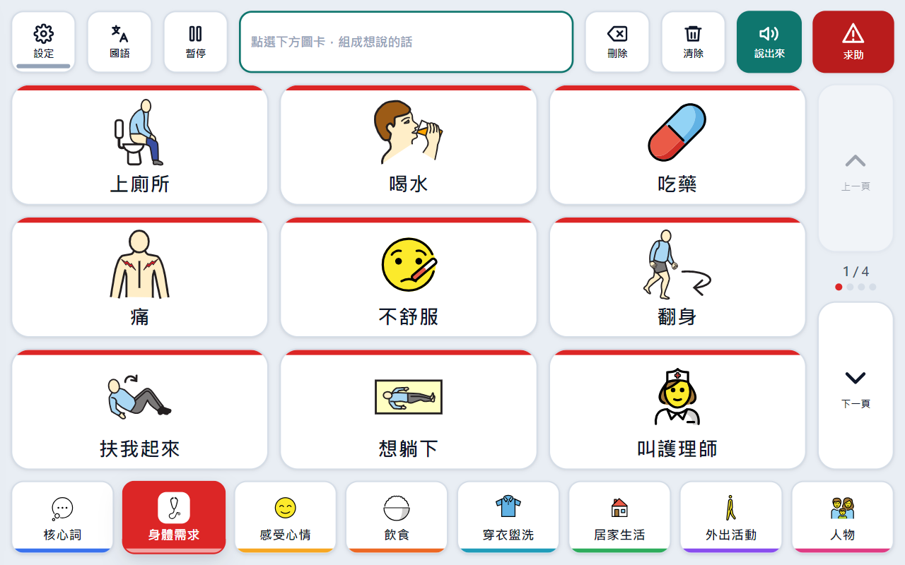
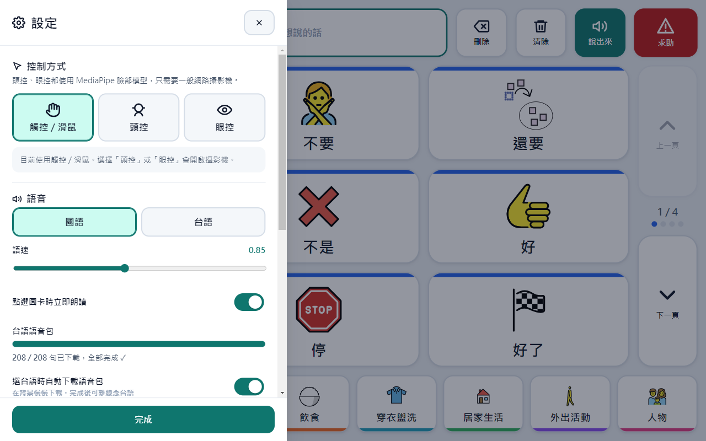

三種操作方式
觸控／滑鼠、頭控（轉頭移動游標）、眼控（用眼睛看）。頭控與眼控只要一般網路攝影機。
手會抖、轉頭慢、說話小聲，都考慮進去了。
觸控／滑鼠、頭控（轉頭移動游標）、眼控（用眼睛看）。頭控與眼控只要一般網路攝影機。
停留在按鈕上、張嘴、或長眨眼就能選取。另有「暫停」鍵，休息時不會誤觸。
游標平滑可調 1–10 級，加上磁吸、黏著、離開寬限、冷卻時間，抖一下也不會點錯。
核心詞、身體需求、感受心情、飲食、穿衣盥洗、居家生活、外出活動、人物。每頁 9 格（3×3），按鈕夠大好點選。
一鍵切換國語／台語。台語是真人聲音合成，208 句全部內建在安裝檔裡。
AI 臉部模型、台語語音、所有圖卡都內建。裝好之後，沒有網路也能用頭控、眼控和台語。
除了一般溝通板的詞，也收錄帕金森照護真的會用到的句子。


已內建頭控／眼控模型與全部台語語音，安裝後不需要網路。
按上面的「下載安裝檔」。如果瀏覽器提醒「不常下載」，請選保留。
在「下載」資料夾找到 PDAAC-Offline-Setup-2.1.0.exe，雙擊打開。
如果看到「Windows 已保護您的電腦」，請按「其他資訊」，再按「仍要執行」。
這是因為軟體沒有購買數位簽章，不是病毒。
一鍵安裝，不用選任何選項，幾秒鐘就裝好並自動開啟。之後從桌面或開始選單的「帕金森氏症專用 AAC」開啟。
第一次使用頭控或眼控時，Windows 會詢問能否使用攝影機，請選「允許」。
不用，PDAAC 免費下載使用。
可以。離線完整版已經內建頭控／眼控的 AI 模型和全部台語語音，安裝好之後不需要網路。
不用，一般的網路攝影機或筆電內建鏡頭就可以。使用前建議先在「設定」做一次校準：頭控是 5 點活動範圍校準，可以配合頸部活動受限的情況；眼控是 9 點校準。游標跑偏時按「快速置中」就能修正。
可以。到「設定 → 編輯詞彙」新增、修改、排序或刪除詞彙，也能上傳照片當圖卡。修改會存在這台電腦裡。
可以，但新的詞需要連網產生台語讀音。在「編輯詞彙」按「自動產生台羅」，再按「試聽台語」確認。下載過一次就會存在電腦裡，之後離線也能念。
按「其他資訊」→「仍要執行」即可。這是因為軟體沒有數位簽章，Windows 對不認識的程式都會這樣提醒。
目前只提供 Windows 版。
Windows「設定 → 應用程式」，找到「帕金森氏症專用 AAC」，按「解除安裝」。
PDAAC 使用了以下開放資源，感謝這些作者與團隊：
詞彙參考 Project Core「Universal Core」核心詞與 Cboard 溝通板分類。